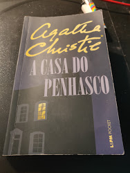
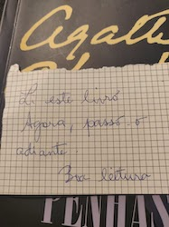

stdmatt's blog
ABOUT |
GITHUB |
PROJECTS
EMAIL |
LINKEDIN |
TWITTER |
INSTAGRAM
I Found a Book
🎵 Chillhop Essentials Winter 2018
Actually... wasn't me that found the book but Adeel!
Nevertheless, since it's me that's bearing the book I'll say that I found it ;D
The book is the Agatha Christie's A casa do Penhasco (Peril at End House) and
Adeel did find it on the Metro wagon. He said me that it was late night
and no one was near to the book that was in a chair back into the wagon.
He did ask for the couple people if the book belongs to anyone, but since
no one replied claiming the ownership of the book he did pick it for him.
Unfortunately, Adeel can't read in Portuguese - He's from Pakistan, so he
gave the book to me. I was very happy about it - the type of gift that most
please me is books! Most surprising though was that the message written in
a piece of paper inside the book.
It reads something like that:
I read this book, now pass it forwards. Good reading.
Yeah, exactly!!! The other person gave this book to the world after read it.
I knew that such thing exists, but unfortunately I never found a book by myself
- one can argue that I don't yet, but let's pretend ok?
So now the book is with me, I'm reading it and after I finish this I'll let
it again on the Metro's wagon.
Actually, I gonna start to do something similar this year and I hope that
some of my books let the people so happy like I'm with this one.
Thanks unknown person that gave us this book, thanks Adeel!

